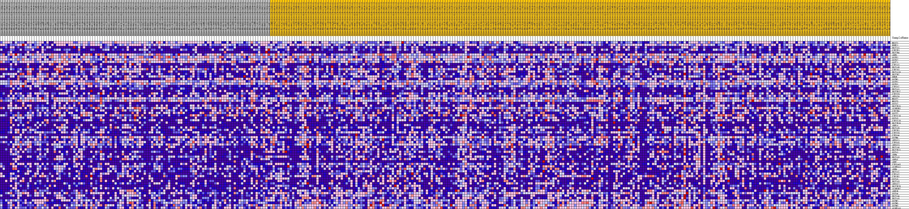
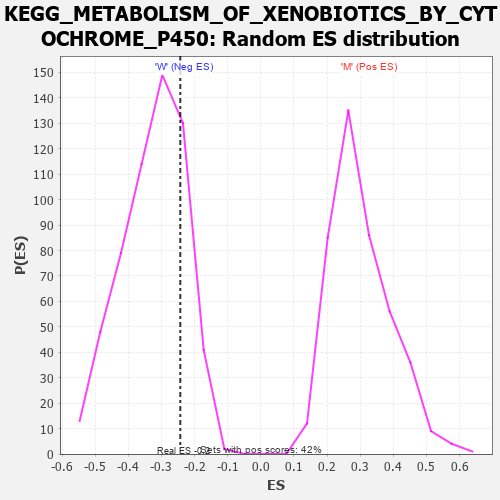

Profile of the Running ES Score & Positions of GeneSet Members on the Rank Ordered List
| Dataset | MUC16.MUC16.cls#M_versus_W.MUC16.cls#M_versus_W_repos |
| Phenotype | MUC16.cls#M_versus_W_repos |
| Upregulated in class | W |
| GeneSet | KEGG_METABOLISM_OF_XENOBIOTICS_BY_CYTOCHROME_P450 |
| Enrichment Score (ES) | -0.24311444 |
| Normalized Enrichment Score (NES) | -0.7509276 |
| Nominal p-value | 0.7881944 |
| FDR q-value | 0.9467086 |
| FWER p-Value | 1.0 |
| PROBE | DESCRIPTION (from dataset) | GENE SYMBOL | GENE_TITLE | RANK IN GENE LIST | RANK METRIC SCORE | RUNNING ES | CORE ENRICHMENT | |
|---|---|---|---|---|---|---|---|---|
| 1 | MGST1 | na | 2989 | 0.096 | -0.0343 | No | ||
| 2 | EPHX1 | na | 3806 | 0.084 | -0.0318 | No | ||
| 3 | UGT2A1 | na | 4182 | 0.080 | -0.0222 | No | ||
| 4 | CYP2F1 | na | 4294 | 0.078 | -0.0082 | No | ||
| 5 | UGT2B4 | na | 5406 | 0.065 | -0.0150 | No | ||
| 6 | ADH5 | na | 5902 | 0.060 | -0.0116 | No | ||
| 7 | GSTK1 | na | 6648 | 0.052 | -0.0144 | No | ||
| 8 | GSTO2 | na | 6875 | 0.050 | -0.0082 | No | ||
| 9 | GSTZ1 | na | 7073 | 0.048 | -0.0018 | No | ||
| 10 | CYP1A1 | na | 7789 | 0.043 | -0.0059 | No | ||
| 11 | UGT1A8 | na | 8001 | 0.041 | -0.0013 | No | ||
| 12 | CYP2S1 | na | 8036 | 0.041 | 0.0065 | No | ||
| 13 | UGT1A10 | na | 8888 | 0.034 | -0.0020 | No | ||
| 14 | UGT2B7 | na | 8891 | 0.034 | 0.0049 | No | ||
| 15 | DHDH | na | 10183 | 0.023 | -0.0137 | No | ||
| 16 | GSTM1 | na | 10653 | 0.020 | -0.0180 | No | ||
| 17 | GSTP1 | na | 10716 | 0.020 | -0.0151 | No | ||
| 18 | GSTO1 | na | 10956 | 0.018 | -0.0158 | No | ||
| 19 | CYP3A7 | na | 11385 | 0.015 | -0.0204 | No | ||
| 20 | UGT1A1 | na | 12367 | 0.009 | -0.0364 | No | ||
| 21 | UGT2B17 | na | 12884 | 0.005 | -0.0447 | No | ||
| 22 | CYP2C9 | na | 16265 | -0.006 | -0.1046 | No | ||
| 23 | AKR1C4 | na | 17007 | -0.011 | -0.1159 | No | ||
| 24 | MGST2 | na | 17338 | -0.012 | -0.1194 | No | ||
| 25 | MGST3 | na | 18221 | -0.017 | -0.1319 | No | ||
| 26 | GSTA2 | na | 18743 | -0.019 | -0.1374 | No | ||
| 27 | UGT2B15 | na | 21507 | -0.032 | -0.1809 | No | ||
| 28 | ALDH3B1 | na | 21560 | -0.032 | -0.1752 | No | ||
| 29 | CYP2B6 | na | 21780 | -0.033 | -0.1724 | No | ||
| 30 | GSTT2 | na | 21870 | -0.033 | -0.1671 | No | ||
| 31 | CYP2C18 | na | 22962 | -0.038 | -0.1791 | No | ||
| 32 | GSTA3 | na | 23340 | -0.040 | -0.1778 | No | ||
| 33 | CYP2C19 | na | 25022 | -0.046 | -0.1987 | No | ||
| 34 | UGT2B10 | na | 25201 | -0.047 | -0.1923 | No | ||
| 35 | ADH1A | na | 25836 | -0.049 | -0.1936 | No | ||
| 36 | UGT1A9 | na | 25853 | -0.049 | -0.1838 | No | ||
| 37 | CYP2E1 | na | 25908 | -0.050 | -0.1746 | No | ||
| 38 | CYP2C8 | na | 26853 | -0.053 | -0.1807 | No | ||
| 39 | CYP3A4 | na | 28012 | -0.057 | -0.1900 | No | ||
| 40 | GSTM4 | na | 28879 | -0.060 | -0.1933 | No | ||
| 41 | AKR1C1 | na | 29768 | -0.063 | -0.1963 | No | ||
| 42 | CYP3A5 | na | 31014 | -0.067 | -0.2051 | No | ||
| 43 | AKR1C3 | na | 31141 | -0.067 | -0.1935 | No | ||
| 44 | UGT1A6 | na | 31720 | -0.069 | -0.1898 | No | ||
| 45 | UGT2B11 | na | 33054 | -0.074 | -0.1988 | No | ||
| 46 | GSTA1 | na | 33952 | -0.077 | -0.1993 | No | ||
| 47 | ADH4 | na | 33999 | -0.077 | -0.1843 | No | ||
| 48 | UGT1A3 | na | 34280 | -0.078 | -0.1735 | No | ||
| 49 | ADH1C | na | 34437 | -0.078 | -0.1603 | No | ||
| 50 | ADH7 | na | 37629 | -0.088 | -0.2000 | No | ||
| 51 | CYP3A43 | na | 40008 | -0.096 | -0.2235 | Yes | ||
| 52 | ALDH3A1 | na | 40324 | -0.097 | -0.2093 | Yes | ||
| 53 | ADH6 | na | 41098 | -0.099 | -0.2029 | Yes | ||
| 54 | UGT1A7 | na | 41884 | -0.102 | -0.1962 | Yes | ||
| 55 | CYP1A2 | na | 42707 | -0.105 | -0.1895 | Yes | ||
| 56 | CYP1B1 | na | 43070 | -0.106 | -0.1742 | Yes | ||
| 57 | GSTA5 | na | 46289 | -0.119 | -0.2080 | Yes | ||
| 58 | UGT2A3 | na | 46727 | -0.121 | -0.1911 | Yes | ||
| 59 | AKR1C2 | na | 46817 | -0.121 | -0.1677 | Yes | ||
| 60 | UGT2B28 | na | 48122 | -0.128 | -0.1650 | Yes | ||
| 61 | ALDH3B2 | na | 48614 | -0.131 | -0.1470 | Yes | ||
| 62 | ADH1B | na | 48947 | -0.133 | -0.1258 | Yes | ||
| 63 | GSTA4 | na | 50303 | -0.142 | -0.1212 | Yes | ||
| 64 | UGT1A4 | na | 50316 | -0.142 | -0.0923 | Yes | ||
| 65 | UGT1A5 | na | 50543 | -0.143 | -0.0669 | Yes | ||
| 66 | GSTM2 | na | 52646 | -0.165 | -0.0711 | Yes | ||
| 67 | GSTM5 | na | 52808 | -0.167 | -0.0397 | Yes | ||
| 68 | GSTM3 | na | 53216 | -0.174 | -0.0113 | Yes | ||
| 69 | ALDH1A3 | na | 54987 | -0.236 | 0.0051 | Yes |

